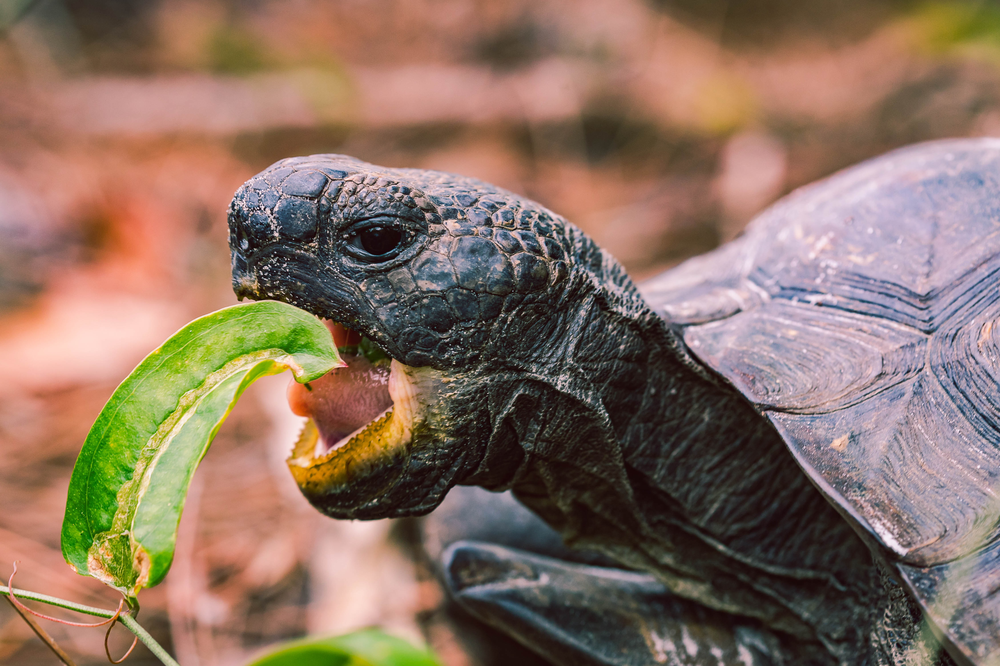

Alimentation
Avec quoi faut-il nourrir mon animal de compagnie ?
Il existe de nombreux types de nourriture sur le marche pour les reptiles de compagnie, que ce soit pour des animaux carnivores, herbivores, insectivores, etc... Ils ont chacun besoin d'un type specifique de nourriture, selon leur taille, espece et age. Voici quelques recommendations de nourriture appropriee a plusieurs types d'animaux :
- Serpents terrestres : des petits mammiferes comme des souriceaux, souris, rats, etc... ainsi que des oisillons (poussins) pour les especes arboricoles. Ils mangent de 2 fois par semaine a une fois par mois selon leur age et taille.
- Serpents aquatiques : du poisson frais (saumons, guppy, anguilles, etc...) et possiblement des amphibiens. Nourrir environ une a deux fois par semaine.
- Lezards herbivores : des vegetaux et fruits (pissenlits, salade, figue, mangue, ...), une fois par jour pour les juveniles jusqu'a une fois chaque deux jours pour les adultes.
- Lezards insectivores : des insectes comme des grillons, criquets, blattes, vers de farine, tous les jours. Ne pas oublier deleur fournir un apport en calcium et vitamines.
- Lezards carnivores : la meme chose que pour les serpents terrestres, ainsi que des oeufs. Nourrir 2 a 3 fois par semaine.
- Lezards omnivores : ce que mangent les 3 autres types de lezards.
- Tortues terrestres herbivores : elles ont besoin d'une ration de 90% de vegetaux (pissenlit, romaine, feuilles de betteraves, feuilles de brocolis, feuilles de navet, endives, blettes, épi-nards, cresson, foin de luzerne, trèfle et fleurs de trèfle, persil, feuilles et fleurs d'Hibiscus, feuilles de mûrier, laitue et scarole occasionnellement) et 10% de fruits (orange, figue fraîche, kiwi, melon, mangue, papaye, banane et pomme, fraises et autres fruits rouges occasionnellement) organisee en plusieurs petits repas par jour.
- Tortues aquatiques carnivores : 70-90 % de produits carnés et 10-30 % de végétaux selon les espèces. Soit des poissons frais entiers, des morceaux de chair de poisson, des batraciens, lombrics, vers de vase, souriceaux de plus de 3 jours, morceaux de foie de veau, ainsi que des végétaux aquatiques et fruits de mer. Une fois par jour pour les juveniles, une fois tous les 2-3 jours pour les adultes.
